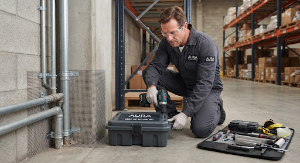
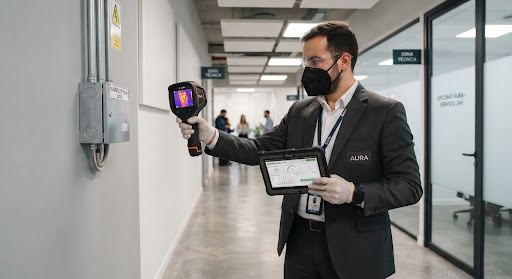
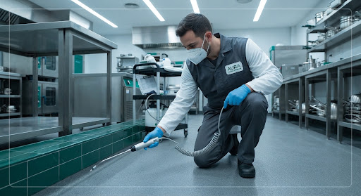

Precisión científica contra toda amenaza biológica.
Diagnóstico técnico, desinsectación, desratización y bioseguridad ambiental para hogares, hostelería e industria con total discreción operativa.
Intervenciones clínicas sin ruido ni residuos innecesarios.
Sustituimos la fumigación genérica por protocolos de precisión: localización de focos ocultos, tratamiento selectivo y exclusión estructural para evitar reapariciones.
Adaptado
Tratamientos adaptados a cada entorno
Discreto
Flota sin rotulación comercial
Trazable
Control digital de puntos
Control integral por vector

Desinsectación dirigida con geles biocidas de alta especificidad
Adaptado a hogares y empresas

Viviendas, chalets y comunidades
Intervenciones rápidas, limpias y sin olores molestos. Protegemos tu hogar frente a cucarachas, hormigas, roedores, avispas y xilófagos con total seguridad familiar.
Calcular diagnóstico arrow_forward
Hostelería, industria y oficinas
Planes preventivos continuados con monitorización periódica, documentación técnica y respuesta prioritaria ante inspecciones o incidencias críticas.
Ver soluciones B2B arrow_forwardProtocolo en cuatro fases verificables
Cada actuación sigue una secuencia técnica documentada para garantizar la erradicación del foco y prevenir nuevas entradas.
Inspección técnica
Localización de focos, vías de entrada y condiciones ambientales favorables.
Diagnóstico biológico
Identificación de especie y selección del método de menor impacto.
Intervención dirigida
Aplicación precisa con protocolos de seguridad específicos y máxima discreción.
Seguimiento y exclusión
Verificación de erradicación y medidas preventivas estructurales.
Diagnóstico Express
Indica tu código postal y teléfono para simular una valoración técnica inmediata.
Solicita tu inspección técnica
Formulario interactivo de demostración de Zero Plague. Completa los campos para comprobar la validación accesible y la confirmación visual.